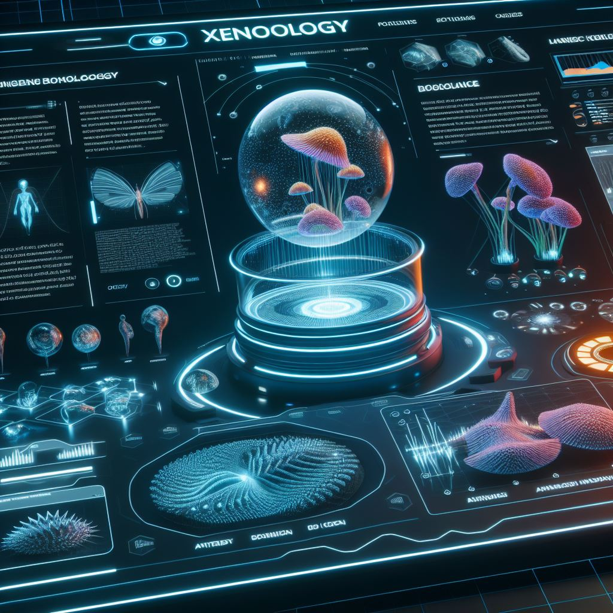

Web Skills

Xenobiology

- Conceptualized, designed, and developed a comprehensive xenobiology website from inception to completion, incorporating user-friendly navigation, visually appealing graphics, and informative content.
- Collaborated with xenobiologists and researchers to understand the target audience and tailor the website's content and features to meet their needs and interests.
- Implemented responsive design principles to ensure seamless accessibility across various devices and screen sizes, enhancing the user experience for visitors.
- Integrated multimedia elements such as videos, animations, and interactive tools to engage users and facilitate understanding of complex xenobiological concepts.
- Utilized SEO techniques and optimized content to improve the website's visibility and reach, attracting a larger audience and increasing traffic.
- Regularly updated and maintained the website, incorporating new research findings, advancements, and developments in the field of xenobiology to keep content relevant and up-to-date.
- Monitored website analytics and user feedback to identify areas for improvement and implemented enhancements to optimize performance and usability.